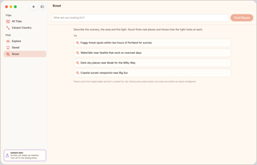
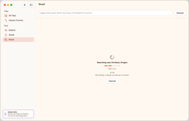
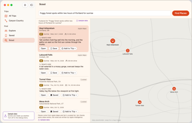
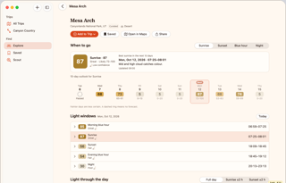
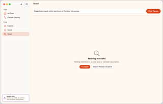
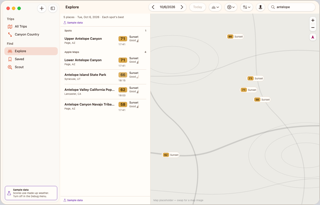
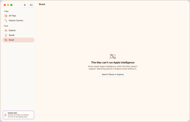

Describe a trip in plain words and let Scout find places. Pick a result to open its spot page. If Scout is unavailable or finds nothing, Search Places in Explore is the way out.

1
Scout · Idle
Type a request and press Return or Find Places, or click an example.

2
Scout · Running
Four stages run. Cancel, or Esc, stops the request.

3
Scout · Results
Select a row; Open, or a double-click, pushes its spot page.

4
Spot page · Sample
Save, or Add to Trip, from the header.
Side branch: no results

7
Scout · No results
Rephrase, or click Search Places in Explore.

8
Explore · Apple Maps
Search by name or place; results come from Apple Maps.
Side branch: Scout unavailable

5
Scout · Unavailable
Apple Intelligence is missing. Click Search Places in Explore.
6
Explore · Apple Maps
Search by name or place; results come from Apple Maps.